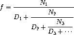

Diagnostic 2: Week 2 review
Recursion
Question 1: In summation...
Write the recursive version of summation, which takes two arguments,
a number n and a function term, applies term to every number
between 1 and n inclusive, and returns the sum of those results.
def summation(n, term):
"""Return the sum of the 0th to nth terms in the sequence defined
by term.
Should be implemented using recursion.
>>> summation(5, lambda x: x * x * x)
225
>>> summation(9, lambda x: x + 1)
55
>>> summation(5, lambda x: 2**x)
63
"""
"*** YOUR CODE HERE ***"
if n == 0:
return term(0)
return term(n) + summation(n - 1, term)Question 2
Write a function has_seven that takes a positive integer n and
returns whether n contains the digit 7. Do not use any assignment
statements - use recursion instead:
def has_seven(k):
"""Returns True if at least one of the digits of k is a 7, False otherwise.
>>> has_seven(3)
False
>>> has_seven(7)
True
>>> has_seven(2734)
True
>>> has_seven(2634)
False
>>> has_seven(734)
True
>>> has_seven(7777)
True
"""
"*** YOUR CODE HERE ***"
if k % 10 == 7:
return True
elif k < 10:
return False
else:
return has_seven(k // 10)Question 3
An infinite continued fraction is an expression of the form:

As an example, one can show that the inverse of the golden ratio can be
computed by setting all of the terms to 1. A way to approximate the
value of an infinite continued fraction is to compute the value of
truncating after a given number of terms. This truncation, called the
k-term finite continued fraction, has the form:

Write a function iterative_continued_frac, which takes two functions
n_term and d_term, which each produce the ith N and D term
respectively, and a number k and returns the k-term finite
continued fraction. Use iteration to perform the computation.
def iterative_continued_frac(n_term, d_term, k):
"""Returns the k-term continued fraction with numerators defined by n_term
and denominators defined by d_term.
>>> # golden ratio
... round(iterative_continued_frac(lambda x: 1, lambda x: 1, 8), 3)
0.618
>>> # 1 / (1 + (2 / (2 + (3 / (3 + (4 / 4))))))
... round(iterative_continued_frac(lambda x: x, lambda x: x, 4), 6)
0.578947
"""
"*** YOUR CODE HERE ***"
result, i = 0, k
while i >= 1:
result, i = n_term(i) / (d_term(i) + result), i-1
return resultNow write a function recursive_continued_frac that uses recursion to
compute the k-term finite continued fraction. Hint: try writing a
recursive helper function to do most of the work, rather than trying to
do the recursion with recursive_continued_frac directly.
def recursive_continued_frac(n_term, d_term, k):
"""Returns the k-term continued fraction with numerators defined by n_term
and denominators defined by d_term.
>>> # golden ratio
... round(recursive_continued_frac(lambda x: 1, lambda x: 1, 8), 3)
0.618
>>> # 1 / (1 + (2 / (2 + (3 / (3 + (4 / 4))))))
... round(recursive_continued_frac(lambda x: x, lambda x: x, 4), 6)
0.578947
"""
"*** YOUR CODE HERE ***"
return recursive_continued_frac_helper(n_term, d_term, k, 1)
def recursive_continued_frac_helper(n_term, d_term, k, i):
denom = d_term(i)
if i < k:
denom += recursive_continued_frac_helper(n_term, d_term, k, i+1)
return n_term(i) / denomTree recursion
Question 4: Partition
The number of partitions of a positive integer n is the number of
ways in which n can be expressed as the sum of positive integers in
increasing order. For example, the number 5 has 7 partitions.
5 = 5
5 = 1 + 4
5 = 2 + 3
5 = 1 + 1 + 3
5 = 1 + 2 + 2
5 = 1 + 1 + 1 + 2
5 = 1 + 1 + 1 + 1 + 1Write a tree-recursive function part(n) that returns the number of
partitions of n.
Hint: Introduce a helper function that computes partitions of n using
only a subset of the integers less than or equal to n. Once you have
done so, you can use very similar logic to the count_change function
from the lecture notes:
def part(n):
"""Return the number of partitions of positive integer n.
>>> part(5)
7
>>> part(10)
42
>>> part(15)
176
>>> part(20)
627
"""
"*** YOUR CODE HERE ***"
return part_max(n, n)
def part_max(n, m):
"""Return the number of partitions of n using integers up to m.
>>> part_max(5, 3)
5
"""
if n < 0 or m <= 0:
return 0
if n == 0:
return 1
return part_max(n-m, m) + part_max(n, m-1)Question 5
Write a function that takes a positive integer n and returns the
number of ten-pairs it contains. A ten-pair is a pairs of digits
within n that sum to 10. Do not use any assignment statements.
The number 7,823,952 has 3 ten-pairs. The first and fourth digits sum to 7+3=10, the second and third digits sum to 8+2=10, and the second and last digit sum to 8+2=10:
def ten_pairs(n):
"""Return the number of ten-pairs within positive integer n.
>>> ten_pairs(7823952)
3
>>> ten_pairs(55055)
6
>>> ten_pairs(9641469)
6
"""
"*** YOUR CODE HERE ***"
if n < 10:
return 0
else:
return ten_pairs(n//10) + count_digit(n//10, 10 - n%10)
def count_digit(n, digit):
"""Return how many times digit appears in n.
>>> count_digit(55055, 5)
4
"""
if n == 0:
return 0
else:
if n%10 == digit:
return count_digit(n//10, digit) + 1
else:
return count_digit(n//10, digit)Orders of Growth
Question 6
def bar(n):
i, sum = 1, 0
while i <= n:
sum += biz(n)
i += 1
return sum
def biz(n):
i, sum = 1, 0
while i <= n:
sum += i**3
i += 1
return sumO(n2)
Question 7
def bonk(n):
sum = 0
while n >= 2:
sum += n
n = n / 2
return sumO(log(n))